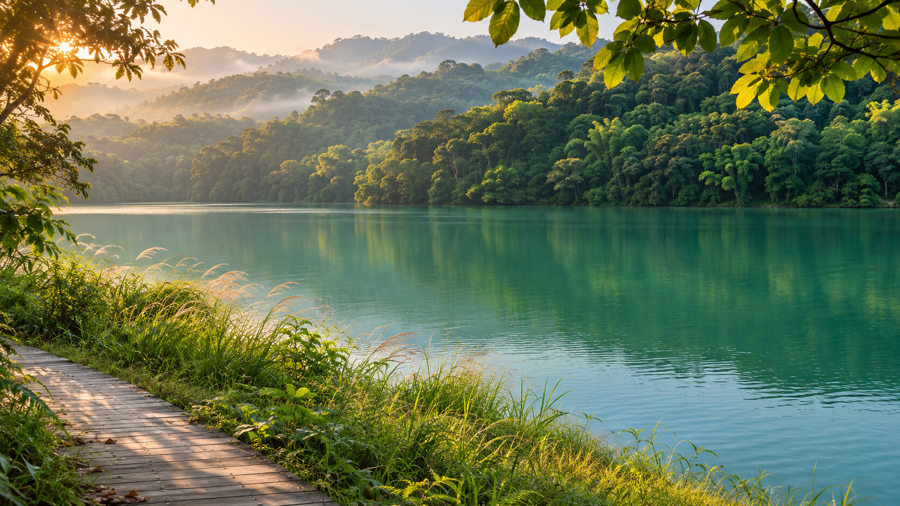
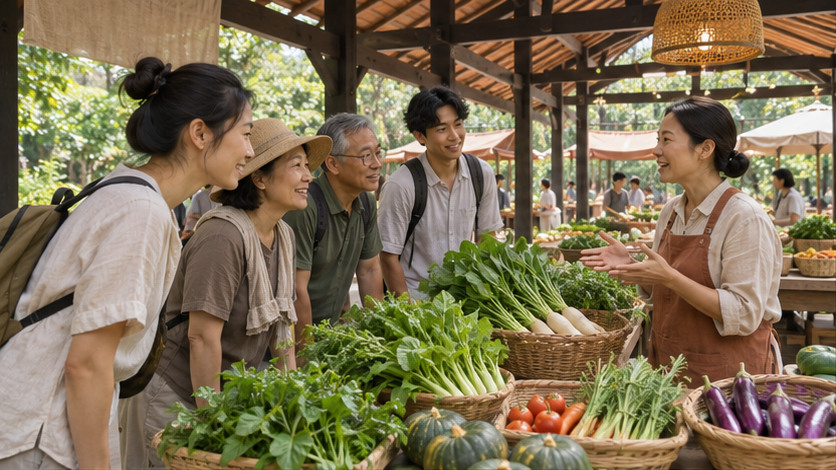
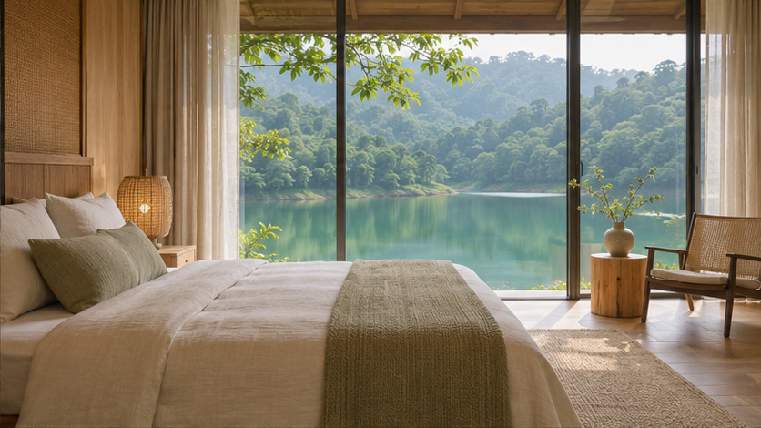
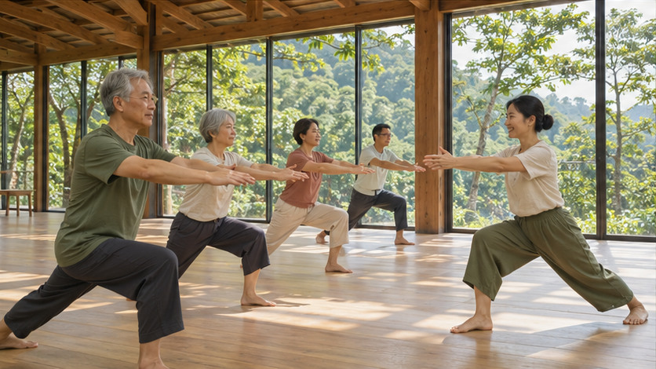
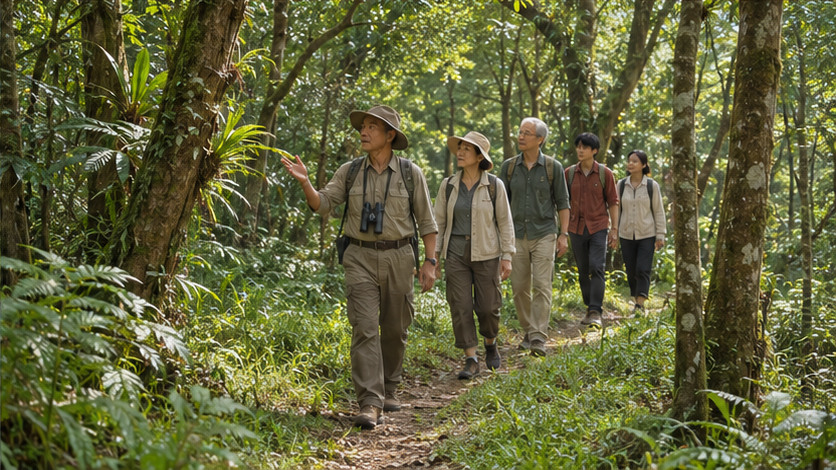

一起吃
跟著新化食材認識一道菜，從餐桌與示範廚房理解選材和料理。

規劃概念網站 景觀意象
園區理念
長健關心的是健康生活能維持多久。虎頭埤以地方食物、日常活動、休息與自然體驗，讓旅客從一次短程走訪開始，找到回家後做得到的事。
跟著新化食材認識一道菜，從餐桌與示範廚房理解選材和料理。
以散步、肌力與平衡課程開始，依活動強度和需求選擇參與方式。
把湖岸散步、旅居、伸展與林下導覽排進行程，留出足夠的停留時間。
四站體驗
選一站看空間與活動。第一階段串聯虎頭埤站、湖濱旅館站與湖濱山城站，森林體驗列入第二階段規劃。

T1 虎頭埤站・第一階段
在新化之門認識地方食材、補給休息、選擇行程。農產、餐飲與課程夥伴可共用空間安排展售、試吃與教學。

T2 湖濱旅館站・第一階段
旅居把夜間休息、湖畔餐食和翌日課程排在一起。日間旅客也能沿公共動線到湖岸停留，選擇餐飲與休憩體驗。

T3 湖濱山城站・第一階段
把運動、活動後放鬆與健康教育放進同一天。課程分強度與主題，供個人、社區與企業團體安排參與。

T4 新化林場站・第二階段規劃
以小團解說與林下步行認識森林。活動時段、路徑與團量將依用地許可、管理協議及現地條件安排。
旅程提案
三種示例都以第一階段的三站為範圍。時間為體驗編排示意，實際營運、班次與活動資訊以後續公告為準。
適合初訪與親友同遊。把時間留給飲食、湖岸步行與一次簡短的活動體驗。
認識一項新化食材，領取步行與活動建議。
留一段可自由調整長度的湖岸步行時間。
跟著教練練習簡單的平衡與伸展。
適合想把飲食和運動放在同一天的旅客，也可供小型團體選用。
聽農產介紹，參加示範廚房的料理體驗。
安排餐食、湖岸停留及短時間休息。
選一堂肌力或平衡課，帶走可在家做的練習。
適合想多留一晚的旅客。把住一晚的時間用於休息、體驗與練習。
從新化地方食物、飲食工作坊與行程說明開始。
下午沿湖步行，安排晚餐與夜間休息。
完成一堂適合自己的課程，整理可延續的活動安排。
T4 完成用地、設施設置及營運程序後，才把林下慢行與生態解說加入行程。森林路徑與團量將依現地管理規劃公告。
營運合作
園區規劃由營運團隊統籌行程，再由具備各自專業的夥伴共同提供服務。
共同規劃季節供應、餐桌活動、示範教學與品質標準。
設計可按程度選擇的住宿套裝、運動課程及企業研習。
共同設計導覽、自然教育、遊客管理與在地參與方式。
常見問題
本站呈現新規劃與行程示例。正式開放日期、票價、班次與住宿預訂將依營運公告提供。
園區規劃提供 3 小時與一日兩種日間選項。兩天一夜行程另結合 T2 湖岸住宿。
以飲食教育、步行、肌力、平衡、伸展和休息活動為主。網站提供概念行程與一般活動說明。
新化林場站列入第二階段。啟用與活動範圍依權責機關程序、管理協議與現場條件決定。